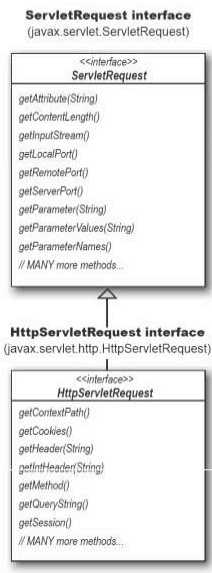
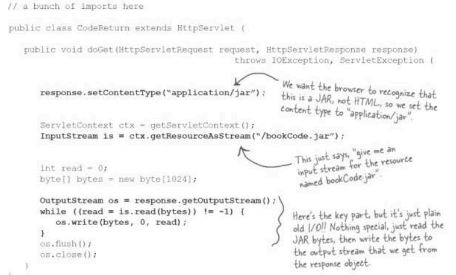
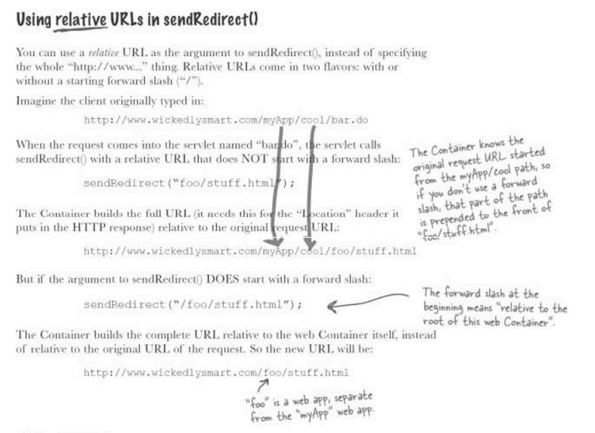
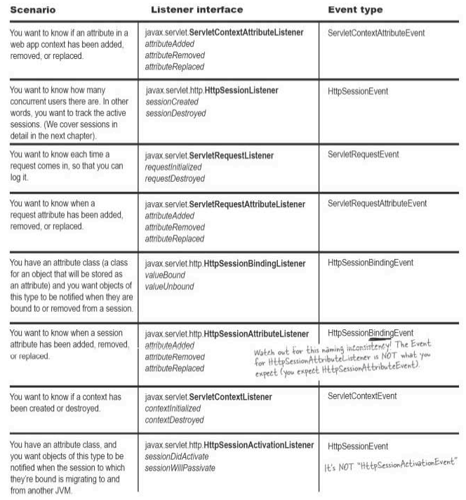
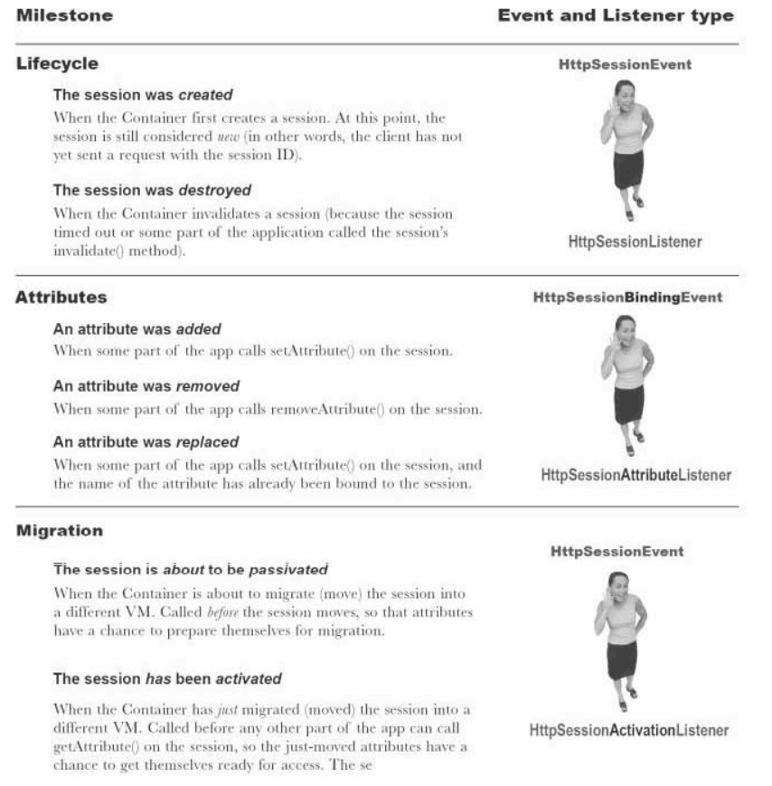
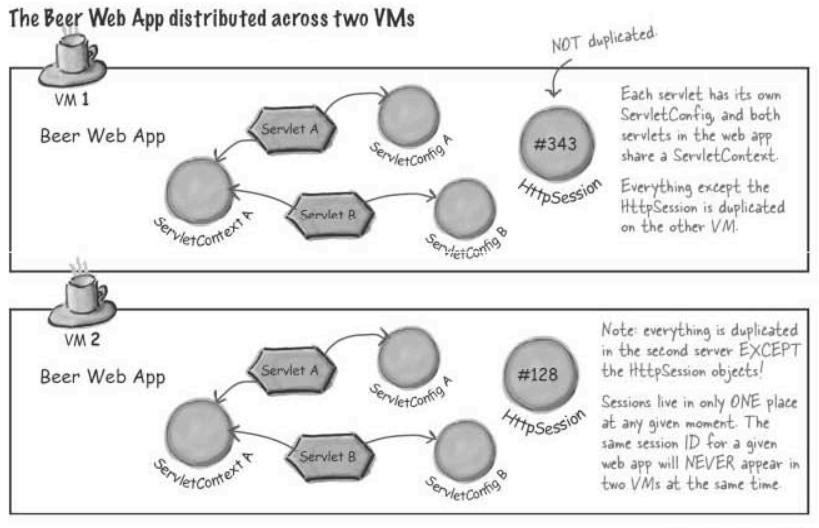
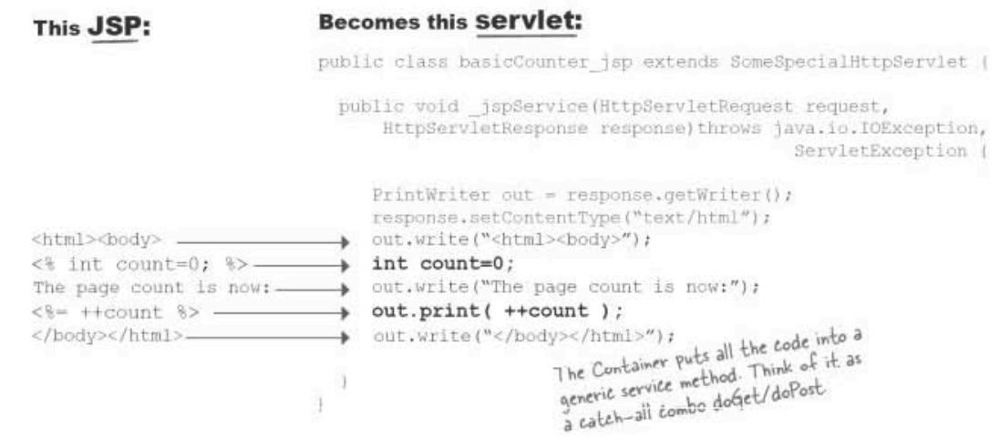

This page mainly contains my notes from a) Java: The Complete Reference, and b) Head
First: Servlets and JSP
Chapter 34: Java Beans
What is a Java Bean
- A Java Bean is a software content that has been designed to be reusable in a variety of different
environments. There is no restriction in the capability (in terms of complexity) of a Java Bean. A bean may
perform a simple function or a complicated function.
- At a basic level, JavaBeans are simply Java classes which adhere to certain coding conventions. Specifically, classes that have:
- At a basic level, JavaBeans are simply Java classes which adhere to certain coding conventions. Specifically, classes that have:
publicdefault (no argument) constructors- allow access to their properties using accessor (getter and setter) methods
- implement
java.io.Serializable - all JavaBean instance variables should be private
What is the difference between a Java Bean and a POJO
- A JavaBean follows certain
conventions. Getter/setter naming, having a public default constructor, being
serializable etc. See JavaBeans
Conventions for more details.
- A POJO (plain-old-Java-object) isn't rigorously defined. It's a Java object that doesn't have a requirement to implement a particular interface or derive from a particular base class, or make use of particular annotations in order to be compatible with a given framework, and can be any arbitrary (often relatively simple) Java object.
- All JavaBeans are POJOs but not all POJOs are JavaBeans.
- A POJO (plain-old-Java-object) isn't rigorously defined. It's a Java object that doesn't have a requirement to implement a particular interface or derive from a particular base class, or make use of particular annotations in order to be compatible with a given framework, and can be any arbitrary (often relatively simple) Java object.
- All JavaBeans are POJOs but not all POJOs are JavaBeans.
What is the difference between a Java Bean and a Spring Bean
- A Spring bean is basically an object managed by Spring. More specifically, it is an object that is
instantiated, configured and otherwise managed by a Spring Framework container. Spring beans are defined in
Spring configuration files (or, more recently, with annotations), instantiated by Spring containers, and
then injected into applications.
- Note that Spring beans need not always be JavaBeans. Spring beans might not implement the
- The reason Spring managed objects are referred to as beans is because in the very early versions, Spring was intended only for use with JavaBeans. That is no longer the case of course: Spring can manage just about any object, even if it doesn’t have JavaBean type characteristics such as default constructors or mutator methods (getters and setters). None the less, the term ‘Spring beans’ has stuck. Can Spring beans be POJOs? Yes, and they usually are (although they don’t have to be – e.g. Spring can be used with ‘heavyweight’ Java objects, such as EJBs). Can Spring beans be JavaBeans? As I have said, yes and again they often are but don’t have to be.
- Note that Spring beans need not always be JavaBeans. Spring beans might not implement the
java.io.Serializable interface, can have arguments in their constructors, etc.
This is the very basic difference between JavaBeans and Spring beans.
- The reason Spring managed objects are referred to as beans is because in the very early versions, Spring was intended only for use with JavaBeans. That is no longer the case of course: Spring can manage just about any object, even if it doesn’t have JavaBean type characteristics such as default constructors or mutator methods (getters and setters). None the less, the term ‘Spring beans’ has stuck. Can Spring beans be POJOs? Yes, and they usually are (although they don’t have to be – e.g. Spring can be used with ‘heavyweight’ Java objects, such as EJBs). Can Spring beans be JavaBeans? As I have said, yes and again they often are but don’t have to be.
A JavaBean on its own is not terribly interesting, it's just a Java class that conforms to some standards.
However, conformance with this standard is one of the pillars on which the Java EE
framework is built and it comes up in quite a few places. FYI, there are a few different types of EJB listed
below:
- Entity Beans:
- Stateful Session Beans
- Stateless Session Beans
- Singleton Beans
You might want to read/write objects to/from an underlying database. You could use JDBC/SQL to do
this but you could also use a persistance framework. The Java EE spec includes a spec for
persistance whereby you declare your class to be an "entity bean" and have Java automatically
generate database tables and logic to map between entries in your database and objects in your
program. The actual implementation is provided by a lower level library such as Eclipselink,
Toplink, Hibernate etc. but the Java API abstracts away any differences between them.
Session beans represent logic while entity beans represented persistent objects. These days entity beans aren't used anymore in favour to JPA entities.
Session beans represent logic while entity beans represented persistent objects. These days entity beans aren't used anymore in favour to JPA entities.
Imagine that you want to create an instance of a Java class which exists on separate JVM. The JVMs
might be running on the same physical machine but equally, may be on separate machines communicating
over a network. Using a Java EE application server, you can create a class which can be instantiated
by clients of the app server. These clients can instantiate a class which will act just like a
normal object but any methods that are invoked on the object get executed on the server with the
results being passed back to the caller. It's basically an object oriented form of remote procedure
calls.
This is a minor variation on stateful session beans. With stateful beans, if the server has 1000
clients then it will potentially have to create 1000 instances of the bean and remember which
instance belongs to which client. With stateless beans, the server creates a pool of beans and
doesn't bother to remember which client owns which bean. When a client invokes a method, the server
picks a bean from the pool and uses it, returning it to the pool on completion. You use stateful
session beans when you want the server to remember details about each client, you will use stateless
beans when you don't need to remember client specific details. Note that the stateless beans may
well have state, it's just that this state won't be of interest to the client.
//TODO..?
Introspection
Introspection is the automatic process of analyzing a bean's design patterns to reveal the bean's
properties, events, and methods. This process controls the publishing and discovery of bean operations and
properties.
There are two ways in which the developer of a Bean can indicate which of its properties, events, and methods should be exposed. With the first method, simple naming conventions are used. These allow the introspection mechanisms to infer information about a Bean. In the second way, an additional class that extends the
The introspection mechanism finds all of the public methods of a Bean. Protected and private methods are not presented.
There are two ways in which the developer of a Bean can indicate which of its properties, events, and methods should be exposed. With the first method, simple naming conventions are used. These allow the introspection mechanisms to infer information about a Bean. In the second way, an additional class that extends the
BeanInfo interface is provided that explicitly supplies this information.
The introspection mechanism finds all of the public methods of a Bean. Protected and private methods are not presented.
Design Pattern for Properties
A property is a subset of a Bean’s state. The values assigned to the properties determine the
behavior and
appearance of that component. A property is set through a setter method. A property is obtained by a getter
method. There are two
types of properties:
- Simple:
A simple property has a single value. It can be identified by the following design patterns, where
Nis the name of the property andTis its type:
public T getN()
public void setN(T arg)
A read/write property has both of these methods to access its values. A read-only property has only a get method. A write-only property has only a set method. - Indexed:
An indexed property consists of multiple values. It can be identified by the following design
patterns, where
Nis the name of the property andTis its type:
public T getN(int index);
public void setN(int index, T value);
public T[] getN();
public void setN(T values[]);
Design Pattern for Events
Beans use the delegation event model that was discussed earlier in this book. Beans can generate events and
send them to other objects. These can be identified by the following design patterns, where
These methods are used to add or remove a listener for the specified event. The version of
//TODO: Example code of how to actually use a listener to listen for an event and take action based on it.
T
is the type of the event:
public void addTListener(TListener eventListener)
public void addTListener(TListener eventListener) throws java.util.TooManyListenersException
public void removeTListener(TListener eventListener)
These methods are used to add or remove a listener for the specified event. The version of
addTListener() that does not throw an exception can be used to multicast an event, which
means that more than one listener can register for the event notification. The version that throws TooManyListenersException
unicasts the event, which means that the number of listeners can be restricted to one. In either
case, removeTListener() is used to remove the listener.
//TODO: Example code of how to actually use a listener to listen for an event and take action based on it.
Chapter 35: Introducing Servlets
The javax.servlet Package
The javax.servlet package contains a number of interfaces and classes that establish the framework in which
servlets operate.
| Interface | Description |
|---|---|
| Servlet | Declares the life cycle methods for a Servlet |
| ServletConfig | Allows Servlets to get intiialization parameters |
| ServletContext | Enables servlets to log events and access information about their environment |
| ServletRequest | Used to read data froma Client Request |
| Servlet Response | Used to write data to a Client Response |
| Class | Description |
|---|---|
| GenericServlet | Implements the Servlet and the ServletConfig interfaces |
| ServletInputStream | Encapsulates an input stream for reading requests from a client |
| ServletOutputStream | Encapsulates an output stream for writing response to a Client |
| ServletException | Indicates a Servlet error occurred |
| UnavailableException | Indicates a Servlet is Unavailable |
The Servlet Interface
- Defines methods that all servlets must implement.
- A servlet is a small Java program that runs within a Web server. Servlets receive and respond to requests from Web clients, usually across HTTP, the HyperText Transfer Protocol.
- To implement this interface, you can write a generic servlet that extends
- This interface defines methods to initialize a servlet, to service requests, and to remove a servlet from the server. These are known as life-cycle methods and are called in the following sequence:
1) The servlet is constructed, then initialized with the init method.
2) Any calls from clients to the service method are handled.
3) The servlet is taken out of service, then destroyed with the destroy method, then garbage collected and finalized.
- In addition to the life-cycle methods, this interface provides the
- A servlet is a small Java program that runs within a Web server. Servlets receive and respond to requests from Web clients, usually across HTTP, the HyperText Transfer Protocol.
- To implement this interface, you can write a generic servlet that extends
javax.servlet.GenericServlet
or an
HTTP servlet that extends javax.servlet.http.HttpServlet.
- This interface defines methods to initialize a servlet, to service requests, and to remove a servlet from the server. These are known as life-cycle methods and are called in the following sequence:
1) The servlet is constructed, then initialized with the init method.
2) Any calls from clients to the service method are handled.
3) The servlet is taken out of service, then destroyed with the destroy method, then garbage collected and finalized.
- In addition to the life-cycle methods, this interface provides the
getServletConfig method,
which the
servlet can use to get any startup information, and the getServletInfo method, which allows the
servlet to
return basic information about itself, such as author, version, and copyright.
| Method | Description |
|---|---|
| void init(ServletConfig sc) throws ServletException | Called when the Servlet is initialized. Initialization parameters for the Servlet can be obtained from the sc. A ServletExce[tion should be thrown if the Servlet cannot be intiialized |
| void service(ServletRequest req, ServletResponse res) throws ServletException, IOException | Called to process a request from the Client. The request from the clint can be read from req, the response to the client can be written to res. An exception is generated if if a servlet or IO problem occurs. |
| void destroy() | Called when the Servlet is unloaded from the memory |
| String getServletInfo() | Returns a String describing the Servlet |
| ServletConfig getServletConfig() | Returns a ServletConfig object that contains any initialization parameters |
The ServletConfig Interface
- A servlet configuration object used by a servlet container to pass information to a servlet during
initialization.
The ServletContext Interface
- The
- This interface defines a set of methods that a servlet uses to communicate with its servlet container, for example, to get the MIME type of a file, dispatch requests, or write to a log file.
- There is one context per "web application" per Java Virtual Machine. (A "web application" is a collection of servlets and content installed under a specific subset of the server's URL namespace such as /catalog and possibly installed via a .war file.
ServletContext object is contained within the ServletConfig object, which
the Web server provides the servlet when the servlet is initialized.
- This interface defines a set of methods that a servlet uses to communicate with its servlet container, for example, to get the MIME type of a file, dispatch requests, or write to a log file.
- There is one context per "web application" per Java Virtual Machine. (A "web application" is a collection of servlets and content installed under a specific subset of the server's URL namespace such as /catalog and possibly installed via a .war file.
The ServletRequest Interface
- Defines an object to provide client request information to a servlet.
- The servlet container creates a ServletRequest object and passes it as an argument to the servlet's service method.
- A ServletRequest object provides data including parameter name and values, attributes, and an input stream. Interfaces that extend
- The servlet container creates a ServletRequest object and passes it as an argument to the servlet's service method.
- A ServletRequest object provides data including parameter name and values, attributes, and an input stream. Interfaces that extend
ServletRequest can provide additional protocol-specific data (for
example, HTTP data
is provided by HttpServletRequest.
The ServletResponse Interface
- Defines an object to assist a servlet in sending a response to the client.
- The servlet container creates a
- To send binary data in a MIME body response, use the
- The servlet container creates a
ServletResponse object and passes it as an argument to the
servlet's service method.
- To send binary data in a MIME body response, use the
ServletOutputStream returned by getOutputStream().
To send character data, use the PrintWriter object returned by getWriter(). To mix
binary and text data, for example, to create a multipart response, use a ServletOutputStream
and manage the character sections manually.
The GenericServlet Class
- Defines a generic, protocol-independent servlet. To write an HTTP servlet for use on the Web, extend
-
HttpServlet instead.
-
GenericServlet implements the Servlet and ServletConfig interfaces.
.
The javax.servlet.http Package
- The preceding examples have used the classes and interfaces defined in javax.servlet. However, when
working with HTTP, you will normally use the interfaces and classes in
javax.servlet.http.
| Interface | Description |
|---|---|
| HttpServletRequest | Extends the ServletRequest interface to enable servlets to read data from the HTTP
Request
|
| HttpServletResponse | Extends the ServletResponse interface to enable servlets to write data to an HTTP
response
|
| HttpSession | Provides a way to identify a user across more than one page request or visit to a Web site and to store information about that user. |
| Class | Description |
|---|---|
| Cookie | Allows state information to be stored ona Client machine |
| HttpServlet | Provides methods to handle HTTP requests and responses. |
The HttpServletRequest Interface
- Extends the
- The servlet container creates an
- Java EE Link to the methods
ServletRequest interface to provide request information for HTTP servlets.
- The servlet container creates an
HttpServletRequest object and passes it as an argument to
the servlet's service methods (doGet, doPost, etc).
- Java EE Link to the methods
The HttpServletResponse Interface
- Extends the
- The servlet container creates an
- Several constants are defined that correspond to the different status codes that can be assigned to a HTTP Response.
- Java EE Link to the methods
ServletResponse interface to provide HTTP-specific functionality in sending a
response. For example, it has methods to access HTTP headers and cookies.
- The servlet container creates an
HttpServletResponse object and passes it as an argument to
the servlet's service methods (doGet, doPost, etc).
- Several constants are defined that correspond to the different status codes that can be assigned to a HTTP Response.
- Java EE Link to the methods
The HttpSession Interface
- Provides a way to identify a user across more than one page request or visit to a Web site and to store
information about that user.
- The servlet container uses this interface to create a session between an HTTP client and an HTTP server. The session persists for a specified time period, across more than one connection or page request from the user. A session usually corresponds to one user, who may visit a site many times. The server can maintain a session in many ways such as using cookies or rewriting URLs.
- This interface allows servlets to:
- When an application stores an object in or removes an object from a session, the session checks whether the object implements
- When container migrates a session between VMs in a distributed container setting, all session attributes implementing the
- A servlet should be able to handle cases in which the client does not choose to join a session, such as when cookies are intentionally turned off. Until the client joins the session,
- Session information is scoped only to the current web application (
- Java EE Link to the methods
- The servlet container uses this interface to create a session between an HTTP client and an HTTP server. The session persists for a specified time period, across more than one connection or page request from the user. A session usually corresponds to one user, who may visit a site many times. The server can maintain a session in many ways such as using cookies or rewriting URLs.
- This interface allows servlets to:
- View and manipulate information about a session, such as the session identifier, creation time, and last accessed time
- Bind objects to sessions, allowing user information to persist across multiple user connections
- When an application stores an object in or removes an object from a session, the session checks whether the object implements
HttpSessionBindingListener. If it does, the servlet notifies the object
that it has
been bound to or unbound from the session. Notifications are sent after the binding methods complete. For
session that are invalidated or expire, notifications are sent after the session has been invalidated or
expired.
- When container migrates a session between VMs in a distributed container setting, all session attributes implementing the
HttpSessionActivationListener interface are notified.
- A servlet should be able to handle cases in which the client does not choose to join a session, such as when cookies are intentionally turned off. Until the client joins the session,
isNew returns
true. If the client chooses not to join the session, getSession will return a different session
on each request, and isNew will always return true.
- Session information is scoped only to the current web application (
ServletContext), so
information stored in one context will not be directly visible in another.
- Java EE Link to the methods
The Cookie Class
- The Cookie class encapsulates a cookie. A cookie is stored on a client and contains state information.
- Cookies are valuable for tracking user activities. For example, assume that a user visits an online store. A cookie can save the user’s name, address, and other information. The user does not need to enter this data each time he or she visits the store.
- A servlet can write a cookie to a user’s machine via the
- Some of the information that can be saved for each cookie includes the following:
- The domain and path of the cookie determine when it is included in the header of an HTTP request. If the user enters a URL whose domain and path match these values, the cookie is then supplied to the web server. Otherwise, it is not.
- Java EE Link to the methods
- Cookies are valuable for tracking user activities. For example, assume that a user visits an online store. A cookie can save the user’s name, address, and other information. The user does not need to enter this data each time he or she visits the store.
- A servlet can write a cookie to a user’s machine via the
addCookie() method of the HttpServletResponse
interface. The data for that cookie is then included in the header of the HTTP response that is sent to the
browser. The names and values of cookies are stored on the user’s machine.
- Some of the information that can be saved for each cookie includes the following:
- The name of the cookie
- The value of the cookie
- The expiration date of the cookie
- The domain and path of the cookie
- The domain and path of the cookie determine when it is included in the header of an HTTP request. If the user enters a URL whose domain and path match these values, the cookie is then supplied to the web server. Otherwise, it is not.
- Java EE Link to the methods
The HttpServlet Class
- The
- Provides an abstract class to be subclassed to create an HTTP servlet suitable for a Web site. A subclass of
- Servlets typically run on multi-threaded servers, so be aware that a servlet must handle concurrent requests and be careful to synchronize access to shared resources. Shared resources include in-memory data such as instance or class variables and external objects such as files, database connections, and network connections.
- Java EE Link to the methods
HttpServlet class extends GenericServlet. It is commonly used when
developing servlets that receive and process HTTP requests.
- Provides an abstract class to be subclassed to create an HTTP servlet suitable for a Web site. A subclass of
HttpServlet must override at least one method, usually one of these:
doGet, if the servlet supports HTTP GET requestsdoPost, for HTTP POST requestsdoPut, for HTTP PUT requestsdoDelete, for HTTP DELETE requestsinitanddestroy, to manage resources that are held for the life of the servletgetServletInfo, which the servlet uses to provide information about itself
service method. service handles standard HTTP
requests by dispatching them to the handler methods for each HTTP request type (the doXXX methods listed
above).
Likewise, there's almost no reason to override the doOptions and doTrace methods.
- Servlets typically run on multi-threaded servers, so be aware that a servlet must handle concurrent requests and be careful to synchronize access to shared resources. Shared resources include in-memory data such as instance or class variables and external objects such as files, database connections, and network connections.
- Java EE Link to the methods
Using Cookies
//TODO: There is an example in the book that you have to code
Session Tracking
- HTTP is a stateless protocol. Each request is independent of the previous one. However, in some
applications, it is necessary to save state information so that information can be collected from several
interactions between a browser and a server. Sessions provide such a mechanism.
- A session can be created via the
- A session can be created via the
getSession() method of HttpServletRequest. An
HttpSession object is returned. This object can store a set of bindings that associate names
with objects. The setAttribute(),
getAttribute(), getAttributeNames(), and removeAttribute() methods of
HttpSession manage these bindings. Session state is shared by all servlets that are associated
with a client.

These are my notes from the book - Head First: Servlets and JSP
Index:
Chapter 1: Why use Servlets and JSPs
Chapter 2: Web App Architecture
Chapter 3: Mini MVC Tutorial
Chapter 4: Request and Response - Being a Servlet
Chapter 5: Attributes and Listeners - Being a Servlet
Chapter 6: Session Management - Conversational State
Chapter 7: Using JSP - Being a JSP
Chapter 8: Scriptless JSP - Script-free pages
Chapter 1: Why use Servlets and JSPs
Chapter 2: Web App Architecture
Chapter 3: Mini MVC Tutorial
Chapter 4: Request and Response - Being a Servlet
Chapter 5: Attributes and Listeners - Being a Servlet
Chapter 6: Session Management - Conversational State
Chapter 7: Using JSP - Being a JSP
Chapter 8: Scriptless JSP - Script-free pages
Chapter 1: Why use Servlets and JSPs
- To prevent deployment problems that come with building stand alone apps, we instead deploy our apps to the
browser.

Terminology:
 What is a URL:
What is a URL:
Terminology:
- Web Server:
A web browser lets a user request a resource. The web server receives the request, finds the resource,
and
then sends it back to the user. A resource can be anything - HTML page, image, PDF File. If the
requested
resource is not found, the server replies with a
404-Not Founderror code.
- A web server can refer to either the physical machine (hardware) or the web server application (software). - Web Client: Both the human and the browser application (Mozilla, Chrome) being used are referred to as the Web Client. A web browser can communicate with the web server. It can interpret the HTML code that is sent as a part of the server's response and render that web page. Hence a Web Client (browser) lets the user request something from the server and shows the user the result of that request.
- HTML: When a server answers a request, the server usually sends some type of content for the
browser to
display. This content is written in HTML.
- Two important tags in HTML are:formandinput - HTTP: Most of the conversations held on the web between clients and servers are held using HTTP
Protocol, which allows for simple request-response type conversations. The client sends an
HTTP Requestand the Server responds with aHTTP Response.
HTTP runs on top of TCP/IP. The structure of and HTTP conversation is a simple Request/Response.
Key elements of the request stream are:- HTTP Method Name(the action to be performed): The method name tells the server the kind of
request that is being made, and how the rest of the message will be formatted. The
HTTPprotocol has several methods, but we mostly useGETandPOSTmethods.GET: Gets a resource (HTML page, image, file,..) from the server and sends it back to the Client. You can also send some data (from the Client to the Server) with aGETrequest, but this is not recommended. Firstly, because the number of characters that are sent via aGETrequest are limited and secondly all the data sent in aGETrequest is visible in the URL. The "?" separates the path and the parameters. Together, the entire String is the request that is the URL that is sent with the request.
POST: With POST, you can request something and at the same time send form data to the server. For eg., if the user has completed a long form, you want this data to be stored into a database. In this case you would use aPOSTmethod. The data to be sent back to the server is known as the "payload" or the "message body".
- The page to access (a URL)
- Form parameters (like arguments to a method). These are sometimes also called "query strings"
- A status code (for whether the request was successful)
- Content-type (text, picture, HTML). Also known as MIME type
- The actual content
- An HTTP response can contain HTML. HTTP adds a Header to the response generated by the server. This Header information helps the client process the response. Inside this response can be a
<html></html>that the client then renders as the HTML page that we finally see.
- HTTP Method Name(the action to be performed): The method name tells the server the kind of
request that is being made, and how the rest of the message will be formatted. The
What is a TCP Port:
A TCP port is a 16-bit number that uniquely identifies the software that is running on the hardware. They are NOT physical ports on a system. They are just numbers representing an applications. As per the standard, the HTTP Server Software runs on Port 80. Without port numbers, the Server would have no way of telling which application/software a Client wants to connect to.
- There are a bunch of other ports that are pre-defined to connect to specific services.
A TCP port is a 16-bit number that uniquely identifies the software that is running on the hardware. They are NOT physical ports on a system. They are just numbers representing an applications. As per the standard, the HTTP Server Software runs on Port 80. Without port numbers, the Server would have no way of telling which application/software a Client wants to connect to.
- There are a bunch of other ports that are pre-defined to connect to specific services.
Two things the Server won't do on its own:
- Dynamic Content: The Web Server Application serves only static pages, but a separate "helper" application that the web server can communicate with can build non-static, just-in-time web pages. Just-in-time web pages do not exist before the request comes in. Once the request comes in, the helper app "writes" the HTML and the web server sends the page back to the Client as if it were a static web page.
- Saving data on the Server: A Web Server cannot process form data. When the web server sees a request for a helper app, it assumes that all of the parameters are meant for the Helper app and hence passes all of the parameters to it.
What is a Servlet? And what is JSP?
- The Helper App in Java is known as a Servlet. So a Servlet is just some Java code. But when the web server calls the helper Servlet, it expects HTML code in return. This is done by using using the
- To solve this problem, JSPs were introduced. This allows us to add Java code to HTML instead of writing HTML code in a Java class. The JSP page contains java variables that calls the main Java code and creates the completed HTML page as a JIT web page.
- The Helper App in Java is known as a Servlet. So a Servlet is just some Java code. But when the web server calls the helper Servlet, it expects HTML code in return. This is done by using using the
PrintWriter.println()
method. The HTML code that is to be returned to the web server is included as a String type
argument in the println() method. As you can hope, stuffing properly formatted HTML tags
into
the println()is not a viable solution. For eg. you will have to manually escape every quote
character (") because Java treats them as end of string character. And HTML happens to use a ton of
quotes
to specify the attribute values and what not.
- To solve this problem, JSPs were introduced. This allows us to add Java code to HTML instead of writing HTML code in a Java class. The JSP page contains java variables that calls the main Java code and creates the completed HTML page as a JIT web page.
Chapter 2: Web App Architecture
What is a Container?
- Servlets don't have a
- Apache is you web server application. Tomcat is your Container. When your web server application gets a request for a
- It's the Container that gives the Servlet the HTTP Request and Response, and it's the Container that calls the servlet's methods like

- Servlets don't have a
main() method. They are under the control of another Java application
known as the Container.
- Apache is you web server application. Tomcat is your Container. When your web server application gets a request for a
Servlet (as opposed to, say, a plain static HTML page) the server hands the
request not to the servlet itself, but to the Container in which the servlet is deployed.
- It's the Container that gives the Servlet the HTTP Request and Response, and it's the Container that calls the servlet's methods like
doGet() and doPost().
What does the Container give you?
- Communication Support: The Container(Tomcat) provides an easy way for your Servlets to talk to your Web Server. You don't have to build a ServerSocket, listen on a port, create Streams, etc. The Container knows the protocol between the Web Server and itself, so that your Servlet does not have to worry about, say, the API between the Apache Web Server and your own web application code.
- Lifecycle Management: The Container controls the life and death of you servlets. It takes control of loading the classes, instantiating and initializing the servlets, invoking the servlets methods, and making servlets instances available for garbage collection. With the Container in control, you do not have to worry about the resource management.
-
Multithreading Support: The Container automatically creates a new Java thread for every
servlet request that it receives. When the Servlet's done running the HTTP
service()method for that Client's request, the thread completes (dies). But you are still responsible for Thread safety and other synchronization issues. It's just that the work involved in creating and deleting threads is reduced. - Declarative Security: XML Deployment Descriptors allow you to configure Security without having to hard-code it into any of your servlets or other classes.
- JSP Support: Container also takes care of translating the JSP code into real Java.
How the Container handles a request:
Step 1: User clicks on a link that has a URL to a servlet instead of a static web page
 Step 2: The Container "sees" that the request is for a Servlet, so the container creates two
objects:
Step 2: The Container "sees" that the request is for a Servlet, so the container creates two
objects:
 Step 3: The Container finds the correct Servlet based on the URL in the request, creates or
allocates a thread for that request, and passes the request and response objects to the Servlet thread.
Step 3: The Container finds the correct Servlet based on the URL in the request, creates or
allocates a thread for that request, and passes the request and response objects to the Servlet thread.
 Step 4: The Container calls the Servlet's
Step 4: The Container calls the Servlet's
 Step 5: The
Step 5: The
 Step 6: The thread completes, the container converts the response object into an HTTP Response,
sends it back to the client, and then deletes the request and the response object.
Step 6: The thread completes, the container converts the response object into an HTTP Response,
sends it back to the client, and then deletes the request and the response object.
Step 1: User clicks on a link that has a URL to a servlet instead of a static web page
- HttpServletRequest
- HttpServletResponse
service() method. Depending on the type of
the request, the service() methods calls either the doGet() or
doPost() methods. For this example, we assume that the request was a HTTP GET method.
doGet() method generates the dynamic page and stuffs the page into the
response object. Remember that the Container still has a reference to the Response object.
What makes a Servlet a Servlet:
Note that a Servlet class (in this case

Note that a Servlet class (in this case
Ch2Servlet) does not have a main() method.
It only has a doGet() method.
When a Client clicks on a URL containing a Servlet in Step 1, how does the Container know which Servlet
to call?
A Servlet can have 3 names:
- Why do we do this:
A Servlet can have 3 names:
- Public URL Name: The name encoded into the HTML so that when the user clicks a link that is supposed to go to that servlet, this public URL is sent to the Server in the HTTP Request.
- File Path Name (XXXX.class name): This (XXXX) is the ACTUAL name of the .class file that is stored on the server.
- Deployment Name: It is a secret internal name (not known to the Client) that is given to the .class file. This can be the same as the File Path Name, but can be something completely different as well.
- Why do we do this:
- Flexibility: We can change the path of the .class file without breaking the path of every file that referenced this class file
- Security: We do not want the Client to know the internal directory structure of the Server.
How do we do this mapping: Deployment Descriptors
When you deploy your servlet into your web Container, you will create an XML document called the
- We use two XML elements to map URLs to Servlets - one to map the Client-known Public URL Name to our own internal deployment name, and the other to map our own internal deployment name to the fully-qualified class-name
//TODO: Where is the DD file stored in the IntelliJ project that we created?
- The two DD elements for URL Mappings are:
 - Note that the
- Note that the
When you deploy your servlet into your web Container, you will create an XML document called the
Deployment Descriptor to tell the container how to run your Servlets and JSPs.
- We use two XML elements to map URLs to Servlets - one to map the Client-known Public URL Name to our own internal deployment name, and the other to map our own internal deployment name to the fully-qualified class-name
//TODO: Where is the DD file stored in the IntelliJ project that we created?
- The two DD elements for URL Mappings are:
<servlet>: maps internal name to fully-qualified class name<servlet-mapping>: maps internal name to public URL name
<servlet-class> tag still contains only the class name and not the complete
path of the the .class file. This is because the Container has a specific place that it will look for all
Servlets for which you have specified a mapping in the DD.
What is MVC: Model-View-Controller
- The essence of MVC is that you separate the business logic from the presentation, but put something in between them so that the business logic can stand on its own as a reusable Java class, and doesn't have to know anything about the view. In other words, the business logic should never go into the Servlet. Because the Servlet contains the JSP page, it means that the business logic is tied to the JSP page. We cannot re-use the business logic for some other kind of view, like a GUI. The business logic should always be in a standalone Java class that can be reused.
- Model-View-Controller takes the business logic out of the Servlet and puts it in a "Model" - a reusable plain old Java class. The Model is a combination of the business data and the methods that operate on the data.
- Thus for each Servlet, there will be a new business logic class that will be the
 - But now the problem is that there are a gazillion little Servlets, and all they are doing is updating the
Model and then displaying the View. Lot of code duplication apparently...
- But now the problem is that there are a gazillion little Servlets, and all they are doing is updating the
Model and then displaying the View. Lot of code duplication apparently...
- The essence of MVC is that you separate the business logic from the presentation, but put something in between them so that the business logic can stand on its own as a reusable Java class, and doesn't have to know anything about the view. In other words, the business logic should never go into the Servlet. Because the Servlet contains the JSP page, it means that the business logic is tied to the JSP page. We cannot re-use the business logic for some other kind of view, like a GUI. The business logic should always be in a standalone Java class that can be reused.
- Model-View-Controller takes the business logic out of the Servlet and puts it in a "Model" - a reusable plain old Java class. The Model is a combination of the business data and the methods that operate on the data.
Model, a JSP
page that will be the View, and the original Servlet, bereft of any logic or HTML, that will
form
the Controller part of the puzzle.

How does J2EE fit into all of this
The Java 2 Enterprise Edition is kind of a super-spec - it incorporates other specifications, including the Servlets 2.4 Spec and the JSP 2.0 spec. That's for the Web Container. But the J2EE 1.4 spec also includes the Enterprise JavaBean 2.1 specification, for the EJB Container. In other words, the web container is for the web components (servlets and JSPs) whereas the EJB Container is for the business components.
- A fully-compliant J2EE server must have both a web Container and an EJB Container (plus other things including a JNDI and JMS implementation). Tomcat is just a web Container!(?). It is still compliant with the portions of J2EE spec that address the web container.
The Java 2 Enterprise Edition is kind of a super-spec - it incorporates other specifications, including the Servlets 2.4 Spec and the JSP 2.0 spec. That's for the Web Container. But the J2EE 1.4 spec also includes the Enterprise JavaBean 2.1 specification, for the EJB Container. In other words, the web container is for the web components (servlets and JSPs) whereas the EJB Container is for the business components.
- A fully-compliant J2EE server must have both a web Container and an EJB Container (plus other things including a JNDI and JMS implementation). Tomcat is just a web Container!(?). It is still compliant with the portions of J2EE spec that address the web container.
Chapter 3: Mini MVC Tutorial
The process for creating a Enterprise
Application in IntelliJ can be found here.

Here is the architecture of the Web App:
Creating the Development Environment:
-index.jsp is the file that contains the first page that the user sees when they login into
the http://localhost:8080/BeerV2_war_exploded/. Changing the name of index.jsp
to some other name causes the app to stop working for some reason.
- The web.xml is the Deployment Descriptor that we looked at in the previous chapter.
This is an example of Tomcat Log generated when the Web-App was deployed successfully.
Creating the Deployment Environment:
Let's finish the app now, one step at a time:
Step 1: The Client makes a request for the form.html page
Step 2: The Container retrieves the form.html page
Step 3: The Container returns the page to the browser where the user answers the question on the form and Clicks Submit
Clicking the SUBMIT button causes the HTML form to send a
Step 4: The browser sends the request data to the Container
Now the Container has to figure out which is the actual Class to which the
Step 5: The Container finds the correct Servlet and passes the
request to the Servlet. This class
acts as the Controller, calling the Model
Step 6: The Servlet calls the BeerExpert class for help.
Step 7: The BeerExpert class returns an answer that the Servlet class
adds to the request
object.
The Container provides a mechanism called "Request Dispatching" that allows one container-manged component to call another container-managed component. This is what we use here - the Servlet gets the info from the model, saves it in the request object, then dipatches the request to the JSP.
Step 8: The Servlet forwards the request to the JSP.
Step 9: The JSP gets the answer from the request object.
Step 10: The JSP generates a page for the Container.
Step 11: The Container returns the page to the User.
Step 2: The Container retrieves the form.html page
Step 3: The Container returns the page to the browser where the user answers the question on the form and Clicks Submit
Clicking the SUBMIT button causes the HTML form to send a
POST request to the server. This
request is sent to the SelectBeer.do file (Line 9). Remember that there is no actual class
named such.
It's mapped to an internal Servlet name using the Deployment Descriptors.
Now the Container has to figure out which is the actual Class to which the
SelectBeer.do maps.
For this, the Container looks in the web.xml file (Deployment Descriptor). The Container finds
out that the SelectBeer.do file maps to the Ch3 Beer internal name, which in turn
maps to the com.example.web.BeerSelect Java Class. Now the Container knows which Servlet to
call.
BeerExpert for the business logic, and the View
result.jsp for the response.
Step 6: The Servlet calls the BeerExpert class for help.
The Container provides a mechanism called "Request Dispatching" that allows one container-manged component to call another container-managed component. This is what we use here - the Servlet gets the info from the model, saves it in the request object, then dipatches the request to the JSP.
Step 8: The Servlet forwards the request to the JSP.
Step 10: The JSP generates a page for the Container.
Step 11: The Container returns the page to the User.
Chapter 4: Request and Response - Being a Servlet
- In the previous chapter we looked at the Container's overall role in the
Servlet's life. In this Chapter we look at the Servlet's life in more detail.
- The servlet lifecycle is pretty simple.. There is only one main state:
What do the
-
-
-
- The Servlet moves from the does not exist to the initialized state beginning with the
constructor. But the constructor makes only the object, not the Servlet. When an object becomes a
servlet,it gets all the unique privileges that come with being a servlet, like the ability to use it's
- So overall the process proceeds like this: (refer below diagram) Suppose my servlet is the
- The Servlet inherits the following methods:
- Remember that each Client request runs in a separate thread. At any given time, you will have at least as many runnable threads as there are client requests.
- You might hear things like "Each instance of the servlet..". This is incorrect. The Container runs multiple threads to process multiple requests to a single servlet. And every Client request generates a new pair of request and response object.
What is a Request or a Response object:
- The implementation of these interfaces is left to the vendor. All you need to know is the methods that you can call on these objects. The actual class does not matter because you are referring to the request and the response objects only by the interface type.
- Also note that these are interfaces extending interfaces.
- There are 8 HTTP methods (actually 9 now). There is no mechanism in the servlet API for handling
- Recall the difference between
- This makes
-
- Note that there is nothing stopping you from implementing the
//TODO: There is some stuff about reading from a file and writing to a
- So: to send binary data in a MIME body response, use the ServletOutputStream returned by getOutputStream(). To send character data, use the PrintWriter object returned by getWriter(). To mix binary and text data, for example, to create a multipart response, use a ServletOutputStream and manage the character sections manually.
//TODO:
- The servlet lifecycle is pretty simple.. There is only one main state:
initialized. If the
servlet
isn't initialized then it is either being initialized (by running it's constructor or the
init() method), being destroyed (by running it's destroy()) method, or it
simply does not exist.
What do the
init, service, and destroy methods do?
-
init(): The method is
called after the servlet instance has been created (using the the default
no-args constructor) but before the servlet can service any client requests. You can override this method in
case you have to get a database connection, or you have to register yourself with other objects.
-
service(): When the first Client request comes in, the Container starts a new thread or
allocates
a new thread from the pool and causes the servlet's service() method to be invoked. This method
looks at the request, determines the HTTP method (GET, POST, etc.) and invokes the matching doGet()
or doPost() methods respectively. Note that there are other methods in HTTP as well (HEAD, PUT,
etc) and there are corresponding doXXXXX() methods for almost all of them. Refer the HttpServlet
class below. You should not override the service() method. Your job is to override the doGet()
or the doPost() methods, and let the service() implementation from the HttpServlet
worry about calling the right one.
-
doPost()/doGet(): The service() method invokes the
doGet()
or the doPost() based on the HTTP method (GET, POST, and so on). This is where your code begins.
All the stuff that your app is supposed to be doing goes in here. Always override at least one of these methods.
Whichever ones you override tells the Container what you support. If you do not override doPost(),
for example, then you are telling the Container that this servlet does not support the HTTP POST request.
ServletContext
to get information from the Container.
- So overall the process proceeds like this: (refer below diagram) Suppose my servlet is the
MyServlet class. The Container
calls MyServlet's init() method. But if I do not
override init, the one from GenericServlet runs. Then when a request comes in, the
Container starts or allocates a thread and calls the service() method, which I do not override. So
the service method from the HttpServlet runs. The HttpServlet service
method then calls my overridden doGet or doPost methods. So each time my
doGet or doPost runs in a different thread.
- The Servlet inherits the following methods:
- Remember that each Client request runs in a separate thread. At any given time, you will have at least as many runnable threads as there are client requests.
- You might hear things like "Each instance of the servlet..". This is incorrect. The Container runs multiple threads to process multiple requests to a single servlet. And every Client request generates a new pair of request and response object.
What is a Request or a Response object:
- The implementation of these interfaces is left to the vendor. All you need to know is the methods that you can call on these objects. The actual class does not matter because you are referring to the request and the response objects only by the interface type.
- Also note that these are interfaces extending interfaces.
- There are 8 HTTP methods (actually 9 now). There is no mechanism in the servlet API for handling
doConnect,
so it is not a part of the HttpServlet.
- Recall the difference between
GET and POST that we studied earlier. The key
difference between the two was
that POST has a body, whereas in the GET request all of the parameters are sent in the
header. Remember that GETis ONLY supposed to be getting things from the server. it should
not make any changes to the server. POST on the other hand is used to send data to the server for
update.
- This makes
GET an idempotent request: making the same GET request twice will
cause no negative consequences on the server.
-
POST, on the other hand, is a non-idempotent request. The data sent to the server could be
used to update some state that cannot be reversed. Think a financial transaction that cannot be reversed.
Intuitive example in book.
Basically, you want to ensure that your app logic can handle scenario where the same request comes in more than
once by mistake.
- Note that there is nothing stopping you from implementing the
GET method in the doGet
method as an non-idempotent method. But you would not want to do so...
What determines whether a browser sends a GET or POST request:
- Remember the POST is not the default. If you do not specify a method, by default the GET method will be
used.
How do you send multiple parameters using the POST request:
- In the previous POST request that we sent in Step 3, the browser sent only one of
the four options (light/amber/brown/dark) as the value of the parameter
- If in the previous case the POST request sent the values of the parameters as
- The Servlet class would then use the parameters in the following manner:
color1. But what if we
wanted two or more parameters from the user. This is how we would do it:
color1=light,
in
this example the parameters will be sent as color1=light&theSize=heavy. That is - the POST
request will have both the parameters but separated by an ampersand.
- The Servlet class would then use the parameters in the following manner:
How do you use multiple values for a single parameter:
In the previous example, you one parameter
And the corresponding Servlet class would look like this:
theSize associated with just a single value (either
light, medium, or heavy). However, some form inputs like checkboxes can have more than one value. That means
a single parameter like theSize will could have more than one value depending on how many boxes
the user has checked off.
Besides the parameters, what else can I get from the Request object:
- You really should look at the full API for javax.servlet.ServletRequest
and javax.servlet.http.HttpServletRequest.
- Remember that
- Note the method
- Note the presence of the three different methods:
- Remember that
HttpServletRequest class extends the ServletRequest class.
- Note the method
getInputStream. These streams will contain only the body of the HTTP Request
and not the headers.
- Note the presence of the three different methods:
getRemotePort: In this case, since it is the server asking, it's the Client that is the Remote. SogetRemotePortmeans the Client's remote port. In other words, the port number on the Client from which the request was sent. Remember, if you are a servlet, remote means the Client.getServerPort: This method asks "to which port was the request originally sent"getLocalPort: This method asks "on which port did the request ultimately end up". There is a difference between the above two methods because although the requests are sent to a single port (where the server is listening), the server turns around and finds a different local port for each thread so that the app can handle multiple clients at the same time.

Understanding the Response Object:
- The Response is what goes back to the Client. Typically, you use the response object to get an output
object (usually a Writer) and you use that Stream to write the HTML (or some other type of content) that
goes back to the Client.
- You call two methods on the response:
- You call two methods on the response:
setContentType and getWriter. After that
you are simply doing I/O to write HTML (or something else) to the stream. But you can also use the
response to set other headers, send errors, and add cookies.
application/jar type stream.

What does setting the
setContentType do:
Source
- Content types are included in HTTP responses because the same, byte for byte sequence of values in the content could be interpreted in more than one way. Remember that http can transport more than just HTML (js, css and images are examples), and in some cases, the receiver will not know what type of object it's going to receive. This is the same thing as setting the MIME type. Content type is an HTTP Header that must be included in the HTTP Response.
- Remember to always call
- Common MIME types are:
- Content types are included in HTTP responses because the same, byte for byte sequence of values in the content could be interpreted in more than one way. Remember that http can transport more than just HTML (js, css and images are examples), and in some cases, the receiver will not know what type of object it's going to receive. This is the same thing as setting the MIME type. Content type is an HTTP Header that must be included in the HTTP Response.
- Remember to always call
setContentType before you ahve called the method that gives you your
output stream (getWRiter or getOutputStream). That will guarantee you will not run
into conflicts between the content type and the output stream.
- Common MIME types are:
- text/html
- application/pdf
- video/quicktime
- application/java
- image/jpeg
- application/jar
- application/octet-stream
- application/x-zip
What is the difference between
ServletOutputStream and
PrintWriter:
ServletOutputStream: Provides an output stream for sending binary data to the client. A
ServletOutputStream object is normally retrieved via the
ServletResponse.getOutputStream() method.(Source: Oracle Docs)
This is an abstract class that the servlet container implements.
PrintWriter: Prints formatted representations of objects to a text-output stream. This class
implements all of the print methods found in PrintStream. It does not contain methods for writing raw bytes,
for which a program should use unencoded byte streams.
Source: Oracle
Docs
- So: to send binary data in a MIME body response, use the ServletOutputStream returned by getOutputStream(). To send character data, use the PrintWriter object returned by getWriter(). To mix binary and text data, for example, to create a multipart response, use a ServletOutputStream and manage the character sections manually.
What is a Redirect:

What is a Request Dispatch:
A redirect makes the Client do the work. Whereas a Request Dispatch makes something else on the server do
the work.
Chapter 5: Attributes and Listeners - Being a Servlet
What are init-parameters
- Servlets can have initialization parameters. We use the
- When the Container initializes a Servlet, it makes a unique
- Note that the Servlet init parameters are read only once - when the Container initializes the Servlet. Once the parameters are in the
<init-param> element to specify
the name-value pairs. Note that the <init-param></init-param> should be inside the
servlet element that you want to initialize with the particular value.
ServletConfig for the Servlet.
The Container reads the servlet init parameters from the DD and gives them to the ServletConfig,
and then passes the ServletConfig to the servlet's init method.
- Note that the Servlet init parameters are read only once - when the Container initializes the Servlet. Once the parameters are in the
ServletConfig they won't be read again until/unless you redeploy
the servlet.
What are the functions of a
ServletConfig
- A servlet configuration object used by a servlet container to pass information to a servlet during
initialization.
- It has the following methods:
- It has the following methods:
| Method | Description |
|---|---|
| String getInitParameter(String name) | Gets the value of the initialization parameter with the given name. |
| Enumeration<String> getInitParameterNames() | Returns the names of the servlet's initialization parameters as an Enumeration of
String objects, or an empty Enumeration if the servlet has no initialization
parameters.
|
| ServletContext getServletContext() | Returns a reference to the ServletContext in which the caller is executing. Same as
running this.getServletContext |
| String getServletName() | Returns the name of this servlet instance. |
How can a JSP get the Servlet init parameters
- One way is to store the init parameters using the
- The problem is that setting a request attribute works but only for the JSP to which you forwarded the request. The email address is something that might be used from all over the application. If you use the
- This can avoided by using a
request.setAttribute like we saw previously. request.setAttribute was used to pass a
name/value pair from the Controller to the JSP, where the value could be any object.
- The problem is that setting a request attribute works but only for the JSP to which you forwarded the request. The email address is something that might be used from all over the application. If you use the
init-param for this purpose, you will have to configure them in the DD for every
servlet, and
then have every servlet make them available to the JSP. And then if the email address changes, you
will have to make the change in the DD for every Servlet again.
- This can avoided by using a
<context-param> instead of an <init-param>.
What are
<context-param>
- Context init parameters work just like servlet init parameters except that context parameters are
available
to the entire web-app, not just a single servlet. So that means every servlet and JSP in the
app automatically has access to the context init parameters. Also, this way when the value changes, we have
to change it in only one place.
- And that one place is in here..do note that the
- And that one place is in here..do note that the
<context-param> is for the whole app and
hence it is not nested inside an individual <servlet> element.
Differences between the servlet init param and context init params
- Remember that there is only one
- Each Servlet in the app, however, has its own
- The Web Initialization proceeds as follows:
- A Context-Init parameter can also be given the same name as a Servlet-Init parameter. This is because there is no name space conflict since you get the parameters through 2 different objects: ServletConfig and ServletContext.
- If either the context-init-param or the Servlet-init-param are changed, the change will be visible only after the web app is redeployed. You cannot change these values during runtime. There is no setInitParameter().
ServletContext for the entire web-app and all the other
parts of the web app share it.
- Each Servlet in the app, however, has its own
ServletConfig.
- The Web Initialization proceeds as follows:
- Container reads the DD and creates a name/value String pair for each
<context-param> - Container creates a new instance of the
ServletContext - Container gives the
ServletContexta reference to each name/value pair of the context init parameters - The Container makes the
ServletContextavailable to each Servlet and JSP. Hence, every servlet and JSP deployed as part of a single web appp has access to the sameServletContext
ServletContext. A ServletContext is one per
app but only if the app is in a single JVM. In a distributed environment you will have one ServletContext
per JVM. In this case, to create a "Global" parameter, you will use a Database instead.
- A Context-Init parameter can also be given the same name as a Servlet-Init parameter. This is because there is no name space conflict since you get the parameters through 2 different objects: ServletConfig and ServletContext.
- If either the context-init-param or the Servlet-init-param are changed, the change will be visible only after the web app is redeployed. You cannot change these values during runtime. There is no setInitParameter().
There are 2 ways to get a
- In a servlet, the only time you need to go through your
ServletContext object:
this.getServletConfig().getServletContext.getInitParameter(String name)this.getServletContext.getInitParameter(String name)
ServletConfig object always holds a reference to the
ServletContext for that servlet.
- In a servlet, the only time you need to go through your
ServletConfig to get to your
ServletContext is if you are in a Servlet class that does not extend the
HttpServlet or GenericServlet. For example, in a JSP the second option won't
work and you will have to use the first one instead.
The
ServletContextListener
- Suppose you wanted to set up a connection to a database at the initialization of your web app. You could
store the name of the database as a
- We make a separate class that is neither a Servlet, nor a JSP. It listens to two key events in a
- This separate object:
- And there can be different types of listeners triggering on different types of events:
<context-param> in DD. But remember that the DD can
store only name/value pairs, where value has to be a String. So you could store the name of the database, as
a name/value pair. but then how would you initialize the Connection and make it available to all of your
app? For this you need some code that listens to the creation of the ServletContext and runs
some code based on the lifecycle changes of the ServletContext class. This is what the ServletContextListener
is used for.
- We make a separate class that is neither a Servlet, nor a JSP. It listens to two key events in a
ServletContext's
lifecycle: creation and destruction.
- This separate object:
- Gets notified when the Context is initialized
- Gets the
<context-param>from theServletContext - Use the init parameter lookup name to make a database connection
- Store the database connection as an attribute, so that all parts of the web app can access it
- Gets notified when the Context is destroyed
Step 1) Creating the Listener Class: The ServletContextEvent has just a single method -
- Here is the complete picture:
getServletContext()
that returns the ServletContext that changed.
Step 2) Creating the Attribute Class: This is just a POJ Class. It's job is to be the attribute value
that the ServletContextListener instantiates and sets in the ServletContext,
for the Servlet to retrieve.
Step 3) Create the Listener as shown in the comments. We never specified that the
<listener> is supposed to listen for event related to the ServletContext. The Container
figures this out automatically by looking at the BeerContextListener class and seeing that
it implements the ServletContextListener interface, it knows taht the Listener is supposed
to listen for ServletContext events. A listener can implement more than one listener interface. There
are several other types of listeners.
Step 4) Testing it all with our Servlet Class. Remember that getAttribute() returns an
object. hence, you need to cast the object into the appropriate type.

//TODO: Something about HttpSessionBindingListener
What is an attribute
- An attribute is an object bound into one of three other Servlet API objects:
- An attribute is simply a name/value pair (where the name is a String and the value is an object) in a map instance variable.
- In reality, we do not care how it is implemented - all we really care is about the scope in which the attribute exists. In other words, who can see it and how long does it live.
ServletContext,
HttpServletRequest (ServletRequest), or HttpSession
- An attribute is simply a name/value pair (where the name is a String and the value is an object) in a map instance variable.
- In reality, we do not care how it is implemented - all we really care is about the scope in which the attribute exists. In other words, who can see it and how long does it live.
What is the difference between an attribute and a parameter
- An attribute is not a parameter: StackOverflow
Source
- We use
- We use
request.getParameter() to extract request parameters (i.e. data sent by posting a html
form). The request.getParameter() always returns String value and the data comes from client.
The exception to this is ServletContext and the ServletConfig init-parameters
which are string parameters that are configured in web.xml and exist on the server.
What is the difference between the Context, Session, and Request Scopes
- Context Attributes: A
- Session Attributes: Session attributes are bound to a Session, as a means to provide state to a set of related HTTP requests. Session attributes are available ONLY to those Servlets which join the session. They're also unavailable to different JVMs in distributed scenarios. Objects can be notified when they're bound/unbound to the Session implementing the
- Request Attributes: Request attributes are bound to a specific request object, and they last as far as the request is resolved or while it keeps being dispatched from Servlet to Servlet. They're used more as communication channel between Servlets via the
- StackOverflow Source
- These 3 attribute scopes are handled by the
ServletContext attribute is an object bound into a context
through the ServletContext.setAttribute()
method and which is available to ALL Servlets (thus JSP) in that context, or to other contexts via the
getContext() method. By definition a context attribute exists locally in the VM where they were
defined. So, they're unavailable on distributed applications.
- Session Attributes: Session attributes are bound to a Session, as a means to provide state to a set of related HTTP requests. Session attributes are available ONLY to those Servlets which join the session. They're also unavailable to different JVMs in distributed scenarios. Objects can be notified when they're bound/unbound to the Session implementing the
HttpSessionBindingListener interface.
- Request Attributes: Request attributes are bound to a specific request object, and they last as far as the request is resolved or while it keeps being dispatched from Servlet to Servlet. They're used more as communication channel between Servlets via the
RequestDispatcher Interface (since you can't add Parameters...) and by the container. Request
attributes are very useful in web apps when you must provide setup information between information providers
and the information presentation layer (a JSP) that is bound to a specific request and need not be available
any longer, which usually happens with sessions without a rigorous control strategy.
- StackOverflow Source
- These 3 attribute scopes are handled by the
ServletContext,
HttpSession, and ServletRequest interfaces. The API methods for these attributes
are the same in every interface:
Object getAttribute(String name)void setAttribute(String name, Object value)void removeAttribute(String name)Enumeration<String> getAttributeNames(String name)
Context Scope isn't Thread-Safe. Neither is Session Scope.
- Everyone in the app has access to the Context Attributes. That means multiple servlets. And multiple
servlets might have multiple threads, since requests are concurrently handled, each in a separate thread.
This happens regardless of whether the requests are coming in from the same or different Servlets.
- In order to make them thread-safe, you need an intrinsic lock on the ServletContext object. Every object has an intrinsic lock associated with it. By convention, a thread that needs exclusive and consistent access to an object's fields has to acquire the object's intrinsic lock before accessing them, and then release the intrinsic lock when it's done with them. A thread is said to own the intrinsic lock between the time it has acquired the lock and released the lock. As long as a thread owns an intrinsic lock, no other thread can acquire the same lock. The other thread will block when it attempts to acquire the lock.
- This way everyone accessing the context has to first get the lock on the Context object. This ensures that only one thread is setting and getting the context attribute. But remember that this works only if ALL of the other code that manipulates the same context attribute ALSO synchronizes on the ServletContext. If even part of the code doesn't ask for the lock, then that code is free to hit the context attributes.
//TODO: Why not get a lock just on the variable being changed? Instead of getting a lock on the entire ServletContex?
//i.e. do:
- Remember that Synchronization causes a lot of overhead and hurts concurrency. Make your synchronized block
as small as possible. Get the lock, get in, get what you need, adn get the heckin heck out so that the lock
can release and other threads can run that code.
- Writing Servlet code:
Thread Safety Tips
Why is singlethreadmodel deprecated
- In order to make them thread-safe, you need an intrinsic lock on the ServletContext object. Every object has an intrinsic lock associated with it. By convention, a thread that needs exclusive and consistent access to an object's fields has to acquire the object's intrinsic lock before accessing them, and then release the intrinsic lock when it's done with them. A thread is said to own the intrinsic lock between the time it has acquired the lock and released the lock. As long as a thread owns an intrinsic lock, no other thread can acquire the same lock. The other thread will block when it attempts to acquire the lock.
- This way everyone accessing the context has to first get the lock on the Context object. This ensures that only one thread is setting and getting the context attribute. But remember that this works only if ALL of the other code that manipulates the same context attribute ALSO synchronizes on the ServletContext. If even part of the code doesn't ask for the lock, then that code is free to hit the context attributes.
//TODO: Why not get a lock just on the variable being changed? Instead of getting a lock on the entire ServletContex?
//i.e. do:
synchronized (this.getServletContext().getAttribute("UserCount")) ?
- Writing Servlet code:
Thread Safety Tips
Why is singlethreadmodel deprecated
So what even is Thread-Safe
- Only Request Scoped attributes and Local variables are Thread-Safe
- Everything else is subject ot multi-threaded manipulation unless you do something about it.
- Everything else includes:
- Can you make instance variables thread-safe: No. You should avoid using instance variables in your code.
- Then what should you use if you need multiple instances of the Servlet to share something: It's incorrect to say "multiple instances of the Servlet" because there is always just ONE instance of the servlet. One instance. Many threads...
- If you want all the threads to access a value, decide which attribute state makes the most sense and store the value in that attribute. Chances are you can solve the problem in one of two ways:
- Everything else is subject ot multi-threaded manipulation unless you do something about it.
- Everything else includes:
- Context Scoped Attributes
- Session Scoped Attributes
- Instance Variables in the Servlet
- Static Variables in the Servlet
- Can you make instance variables thread-safe: No. You should avoid using instance variables in your code.
- Then what should you use if you need multiple instances of the Servlet to share something: It's incorrect to say "multiple instances of the Servlet" because there is always just ONE instance of the servlet. One instance. Many threads...
- If you want all the threads to access a value, decide which attribute state makes the most sense and store the value in that attribute. Chances are you can solve the problem in one of two ways:
- Declare the variable as a local variable inside the service method, rather than as an instance variable
- Use an attribute in the most appropriate scope
What is the use of Request Attributes and Request Dispatching
- Request attributes make sense when you want some other component of the app to take over all or a part of
the request. The controller communicates with the model and gets back the data that the view needs in order
to build the response. There is no reason to put the data in a Session or a Context attribute, since it
applies only to this request, so we put it in the request scope.
- So how do we make another part of the component to take over the request -
-
- So how do we make another part of the component to take over the request -
RequestDispatcher
RequestDispatcher's have only two methods:
forward(ServletRequest request, ServletResponse response)include(ServletRequest request, ServletResponse response)
RequestDispatcher in two ways: from the request or from the context. Regardless
of where you get it, you ahve to tell it the web component ot which you are forwarding the request.
Chapter 6: Session Management - Conversational State
Web Servers have no short term memory. As soon as they send you a response, they forget who you are. The
next time you make a request, they do not recognize you. In other words, they do not remember what you have
requested in the past, and they don't remember what they've sent you in response. Nothing. Sometimes, that's
fine. But sometimes you need to keep conversational state with the client across multiple requests. A
shopping cart would not work if the client had to make all his choices and check out in a single request.
How do we track the Client's requests over multiple sessions
- The objective is to store all the choices that have been made by the Client over multiple requests. There
are 3 ways in which this can be accomplished:
- Use a stateful session enterprise java bean: Make your servlet become a Client to a stateful session bean, and each time a request comes in we locate that Client's stateful bean. Remember that for doing this you hosting provider should have full J2EE server with an EJB Container. Tomcat is just a web container, not a full J2EE container.
- Use a Database: Have your hosting provider communicate with a database, like MySQL. Then all the client's data can be written to or read from the database. The downside is that it is extremely expensive to do this.
-
Use an
HttpSession: We can use anHttpSessionto hold the conversational state over multiple requests - i.e for the entire session with the user.
How does the container know who the Client is
- The HTTP Protocol is a Stateless Protocol. This means that the connection between the Client and the
Container exists for a single request/response. The Container does not recognize that the Client
making the second request is the same Client from a previous request. As far as the Container is concerned,
each request is from a new Client.
- The Container solves this problem by assigning a unique
- On the Client's first request, the Container generates a unique session ID and gives it back to the Client with the response. The Client then sends back the session ID with each subsequent request. The Container sees the ID, finds the matching session, and associates the session with the request.
- Attributes bound into a session are available to any other servlets that belong to the same
- The Container solves this problem by assigning a unique
SessionID to each user.
- On the Client's first request, the Container generates a unique session ID and gives it back to the Client with the response. The Client then sends back the session ID with each subsequent request. The Container sees the ID, finds the matching session, and associates the session with the request.
- Attributes bound into a session are available to any other servlets that belong to the same
ServletContext
and handles a request identified as being a part of the same session.
How do the Client and the Container exchange the SessionID info
- The Container uses
- All you have to do is tell the Container that you want to create or use a Session. The Container takes care of the rest. The Container generates the SessionID, creates a new
- The
Cookies to do this.
- All you have to do is tell the Container that you want to create or use a Session. The Container takes care of the rest. The Container generates the SessionID, creates a new
Cookie object, stuffs
the SessionID into the Cookie object, sets the Cookie as a part of the response.
On subsequent
requests, the Container gets the SessionID from the Cookie in the request, matches the SessionID
with an existing session, and associates that session with the current request.
- The
HttpSession session = request.getSession() does the following:
if(the request contains the SessionID object)
find the Session matching that ID
else if (there is no SessionID Cookie OR there is no session matching the current SessionID)
create a new session
How to check if the Session already exists
- The no-args
-
- There are couple of points that you were confused about that need to be clarified:
- You can check the cookies that are stored in the browser on Chrome - Inspect - Application - Cookies
Here you will see the Cookies with the name
- Note that a sessionId is assigned to you the moment you first log in into the website. In the dummy example that we had, the first page that the user was reaching was a index page. The
- Check this SO Post explaining things.
- So in order to kill that session, we first call
HttpSession session = request.getSession() method returns a session regardless of
whether there is a
pre-existing session or not. You can check if it is a new session by using session.isNew()
method.
-
HttpSession session = request.getSession(false) will return null if there is no
pre-existing session for the Client. You can use it if you have a scenario in which the servlet wants to use
only a previously created session.
- There are couple of points that you were confused about that need to be clarified:
- You can check the cookies that are stored in the browser on Chrome - Inspect - Application - Cookies
Here you will see the Cookies with the name
JSESSION ID. This is the same id as the sessionId.
While testing, if you see your app behaving abnormally (session seems to be behaving weirdly), first clear
the cookies in your browser (Ctrl + Shift + Del) and then retry. If that does not work, go into your app and
by inspecting elements, manually delete the cookies.
- Note that a sessionId is assigned to you the moment you first log in into the website. In the dummy example that we had, the first page that the user was reaching was a index page. The
doGet method was
activated only when the user clicked a button on the index page to get the form. The point is that, line 4
of the below code will always contain a valid session.
- Check this SO Post explaining things.
- So in order to kill that session, we first call
session.invalidate. Remember that this will
not set the session to null as explained
here in SO. So we get the session again, as on Line 8. This time the Container does not find any
existing sessions and the session variable is in fact null. When we run the code, now, the
if (session == null) block is executed.
What if the Client has disabled Cookies
- If the Client does not use Cookies, you can use URL rewriting as a backup. URL rewriting
allows the sessionID to be added to the end of the URL (instead of being sent as a Cookie).
- URL rewriting kicks in only if cookies fail and you have explicitly encoded your URLs.
- Read up on the
- When a Container sees a call to
- URL rewriting kicks in only if cookies fail and you have explicitly encoded your URLs.
- Read up on the
encodeURL method
- When a Container sees a call to
getSession, and the Container does not have the SessionID
associated with the Client's request, the Container knows that it must attempt to set up a new session with
the Client. At this point the Container does not know whether the Cookies will work or not. Hence for the
first response back to the Client, the Container tries both, Cookies and URL Rewriting.
What are the key
HttpSession methodsHow does a Container know when it is safe to destroy Sessions
- There are 3 ways that a Session can die:
a) Setting Session Timeout: There are two ways to set the session timeout
//TODO: Why isn't the session invalidated in the second case? I can still get and print the values of the
attributes. Why?
- It times out
- You call
invalidate()on the Session object - The application goes down or crashes
a) Setting Session Timeout: There are two ways to set the session timeout
- Setting Session Time out for a specific session: Use this if you want to change the
session-timout value for a particular session instance without affecting the timeout length for any
other sessions in the app.
session.setMaxInactiveInterval(20*60)
Only the session on which you call the method will be affected. Note that the argument to the method is in seconds. - Configuring Session Timeout in the DD: This has the same effect as calling
setMaxInactiveInterval()on every session that is created.
invalidate(): Invalidates this session then unbinds any objects bound to it.
Like we discussed earlier, calling this method will not set the session object to null.
Can I use the Cookie for things other than maintaining Sessions
- Yes. Remember that the cookie is nothing more than a little piece of data (name/value) pair that is
exchanged between the Client and the server. The Server sends the Cookie to the Client and the Client
returns the cookie to the Server when teh Client has to make a new request to the Server.
- By default, a Cookie lives only as long as the session. Once the client quits his browser, the cookie disappears. That's how the
- By default, a Cookie lives only as long as the session. Once the client quits his browser, the cookie disappears. That's how the
JSESSION cookie works. But you can tell a cookie to stay alive even
AFTER the browser shuts down. These types of cookies are known as Persistent Cookies.
How to use Cookies with the Servlet API
- This is probably a convoluted example, but stick through it. First the JSP page. Note that there is no
getCookie(String) method. You can only get Cookies in a Cookie array and then you have to loop over the
array to
find the one you want.
And then the Servlet class:
What kinds of listeners are we dealing with

What is Session Migration
- In a clustered environment, the Container might do load-balancing by taking client requests and
sending
them out JVMs. The JVMs themselves may or may not be on the same physical boxes, that is immaterial. The
point
is that the web app is in multiple places. This means that each time the same Client makes a request, the
request could end up going to a different instance of the same servlet.
- The question is: how does the Container manage the
- Only
- There is one
- The key point here is that while the other parts of the app are replicated on each node/VM, the session objects (along with the session attributes) are moved.
 //TODO: This is followed by something related to SessionListeners.
//TODO: This is followed by something related to SessionListeners.
- The question is: how does the Container manage the
ServletConfig, ServletContext,
and HttpSession objects in this case.
- Only
HttpSession objects (and their attributes) move from one VM to another.
- There is one
ServletContext per VM. There is one ServletConfig per
Servlet, per VM. But there is only one HttpSession object for a given
SessionId
per web app, regardless of how many VM's the app is distributed across.
- The key point here is that while the other parts of the app are replicated on each node/VM, the session objects (along with the session attributes) are moved.

HttpSessionActivationListener
HttpSessionAttributeListener
HttpSessionAttributeListener
Chapter 7: Using JSP - Being a JSP
The most important point for this chapter is simply: what role does the JSP place in the final servlet class?
In other words, where do the elements in the JSP end up in the source code of the generated servlet?
- We were already familiar with the 3 scopes: request, session, and application. This introduces another
scope known as the pageContext.
- A
- Comments can be added either using:
In the end a JSP is just a Servlet
- In the end, your JSP becomes a full-fledged servlet running in your web-app. The only difference is that
the servlet class is written for you by the Container. The Container takes what you have written in your
JSP, translates it into a servlet class source (.java) file, then compiles that into a java servlet class.
After that it all behaves just like a normal servlet class, i.e the Container loads the Servlet class,
instantiates and initializes it, makes a separate thread for each request and calls the servlet's
- When you deploy a web app witha JSP, the whole translation and compilation step happens only once in the JSP's life. Once it has been translated and compiled, it is just like any other servlet. And just like any other servlet, once that servlet has been loaded and initialized, the only thing that happens at request time is creation or allocation of a thread for the service method. So the above picture is only for the very first request that the container has to handle.
service()
method.
- When you deploy a web app witha JSP, the whole translation and compilation step happens only once in the JSP's life. Once it has been translated and compiled, it is just like any other servlet. And just like any other servlet, once that servlet has been loaded and initialized, the only thing that happens at request time is creation or allocation of a thread for the service method. So the above picture is only for the very first request that the container has to handle.
How to import packages into JSP
- A directive is a way for you to give special instructions to the Container at page translation
time.
- Directives come in three flavors:
- Importing a single package can be done as follows:
- Importing a multiple packages can be done as follows:
- Directives come in three flavors:
- page
- include
- taglib
- Importing a single package can be done as follows:
<%@ page import = "java.util.List" %>.
Notice that there is no semicolon at the end of the import statement.
- Importing a multiple packages can be done as follows:
<%@ page import = "java.util.List,java.util.Map"%>. Note that packages are separated by
comma and the quotes go around the entire list of packages.
3 JSP element types
- We can now introduce 3 different JSP element types:
- Scriptlet
<% %>: Between these tags goes the java code that you want to write in the JSP page.
So we can write<% out.println(Counter.getCount()); %>. - Directive
<%@ %>: used for writing import statements, among other things, in the JSP. No semi-colon at the end. - Expression
<%= >: it automatically prints out whatever you put between the tags. This is meant as a replacement forout.printlnin JSP. So, instead of writing, say,<% out.println(Counter.getCount()); %>, we would just write<%= Counter.getCount() %>. Note that the expression does not need a semicolon at the end either. A n expression cannot use a method that does not have a return type, i.e hasvoidas return type because then there won't be anything to print.
out in the above example is passed implicitly to your
JSP page, just in case you want to pass it to some other object that does not have direct access to the
output stream for the response.
What really happens to your JSP Code
- Let's see where the different JSP elements land in the servlet's class file:
- Also note that the code from the JSP is placed inside the

- All scriptlet and expression code lands in a service method. That means that variables declared in a
scriptlet are ALWAYS local variables.
- Also note that the code from the JSP is placed inside the
_jspService method that takes as
argument the HttpServletRequest request object. Hence you wan write your JSP assuming that it
is going to be a part of a servlet. This is also an example of "implicit" object. Something that we see in
the next paragraph.
How do we declare instance variables in a JSP
- There is another JSP element known as a declaration: for example
- Note that this requires a semicolon at the end. JSP declarations are for declaring members of the generated servlet class. This means, both, variables and methods. In other words, anything between the

<%! int count = 0;%>.
- Note that this requires a semicolon at the end. JSP declarations are for declaring members of the generated servlet class. This means, both, variables and methods. In other words, anything between the
<%! %> tag is added to the class outside the service method. That means
that you can declare, both, static variables (what?) and methods.
What implicit objects are passed to the JSP
| API | Implicit Object |
|---|---|
| JspWriter | out |
| HttpServletRequest | request |
| HttpServletResponse | response |
| HttpSession | session |
| ServletContext | application |
| ServletConfig | config |
| Throwable | exception |
| PageContext | pageContext |
| Object | page |
- A
pageContext encapsulates the other implicit objects. This way if you give some other helper
object a reference to the PageContext, the helper can use that reference to get all the OTHER implicit
object
and attributes from all the scopes.
Everything in one place
| JSP Element | Usage | What is it used for | Usage Example |
|---|---|---|---|
| Scriptlet | <% ;%> |
Used to write Java Code | <% out.println(Counter.getCount()); %> |
| Directive | <%@ %> |
Used for writing import statements | <%@ page import = "java.util.List" %> |
| Expression | <%= %> |
Printing out stuff | <%= Counter.getCount() %> |
| Declaration | <%! ;%> |
Declaring methods and instance variables in the JSP | <%! int count = 0;%> |
| ExpressionLanguages | ${ } |
Invokes Java Code | ${applicationScope.mail} |
| Actions | <jsp: />, <c: /> |
They are 2 types: standarad and other |
|
| Scope | In a Servlet | In a JSP (using implicit objects) |
|---|---|---|
| Application/Context | getServletContext.setAttribute("foo", barObject) |
application.setAttribute("foo", barObject) |
| Request | request.setAttribute("foo", barObject) |
request.setAttribute("foo", barObject) |
| Session | request.getSession().setAttribute("foo", barObject) |
session.setAttribute("foo", barObject) |
| Page | Does not apply |
pageContext.setAttribute("foo", barObject) |
//Your comment: in a scriptlet or a declaration. However, outside of this the string "//" would just be parsed like normal HTML comment and you would see your comment printed on the page<!-- HTML Comment -->: Use this if you want the comments to stay as a part of the HTML response to the Client<%-- JSP Comment --%>: Comments will be hidden. They are stripped off when the JSP is converted into Java.
Now that you know how to write java code in JSP, never do it
- Java code in JSP is considered hard to change and maintain.
- Instead we make use of Expression Language or EL. The purpose of EL is to offer a simeple way to invoke Java code - but the code itself belongs somewhere else. That means in a regular old Java class that's either a JavaBean, a class with static methods, or something called a Taghandler.
- In other words you do not write method code into your JSP. You write the Java methods somewhere else and call it using EL.
- You can use
//TODO: Complete the exercises and the Coffee Cram questions from this Chapter.
- Instead we make use of Expression Language or EL. The purpose of EL is to offer a simeple way to invoke Java code - but the code itself belongs somewhere else. That means in a regular old Java class that's either a JavaBean, a class with static methods, or something called a Taghandler.
- In other words you do not write method code into your JSP. You write the Java methods somewhere else and call it using EL.
- You can use
<scripting-invalid> true </scripting-invalid> to disable scripting
elements for ALL JSPs. There is a specific format for this. Refer text.
Chapter 8: Scriptless JSP - Script-free pages